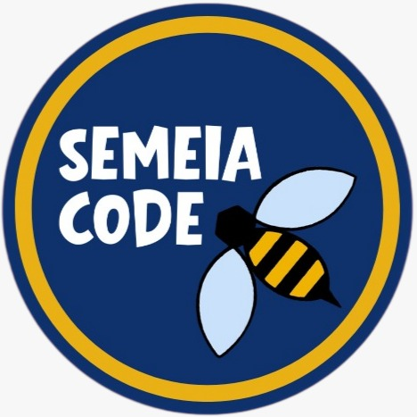

Professor
Guilherme Palermo Coelho é Professor Associado II da Faculdade de Tecnologia da Unicamp, com formação em Engenharia da Computação e especialização acadêmica nas áreas de Inteligência Artificial, Aprendizado de Máquina, Mineração de Dados e Otimização. Atua no ensino de disciplinas de Computação e também em projetos de pesquisa e extensão. Entre suas atividades de destaque está o SemeiaCode, projeto de extensão iniciado em 2025 que oferece aulas introdutórias de programação em Python para adolescentes de escolas públicas de Limeira, aproximando os estudantes da tecnologia e dos cursos da Faculdade de Tecnologia da Unicamp.
O Semeia Code é um projeto de extensão voltado ao ensino de programação e tecnologia, oferecendo aulas e atividades práticas para estudantes. Atualmente, o projeto conta com muitos alunos de TADS e está oferecendo um novo curso de Programação 2 na Escola Brasil, sendo este o segundo semestre consecutivo em que o projeto ministra aulas na escola.
